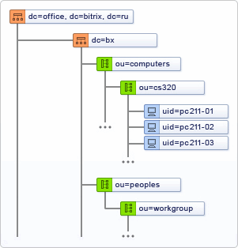

AD/LDAP модуль реализован с учётом особенностей работы LDAP (Lightweight Directory Access Protocol) и AD (Active Directory).
В основе работы LDAP/AD лежит принцип хранения информации в виде записей, обладающих набором атрибутов и хранящихся в базе данных с древовидной иерархической структурой. Таким образом, при настройке на сервере локальной вычислительной сети LDAP или AD, информация о группах пользователей будет представляться в следующем виде:

Используя данную структуру хранения данных, модуль AD/LDAP позволяет настраивать соответствие групп пользователей корпоративной сети группам пользователей сайта.
Соответствие групп пользователей задается в специальной Таблице Соответствий в административном разделе сайта. При этом возможно несовпадение имен групп пользователей сайта с именами групп пользователей корпоративной сети. Например, группе пользователей корпоративной сети Techsupport , к которой относятся сотрудники технической поддержки корпоративной сети, может быть поставлена в соответствие группа пользователей Techsupport stuff ,созданная на сайте. Теперь сотрудники службы технической поддержки корпоративнойсети смогут выполнять обязанности сотрудников службы технической поддержки сайта.
Группы пользователей внутри компании обладают правами на доступ к определённым ресурсам корпоративной сети, а сопоставленные им группы пользователей на сайте обладают правами на доступ к ресурсам сайта. Например, группа пользователей Techsupport наделена правами на доступ к почтовому серверу сети, а группа пользователей сайта Techsupport stuff обладает правами на доступ к модулю “ Техническая поддержка ” .
В соответствии с приведенным выше примером, пользователь, относящийся к группе Techsupport корпоративной сети, при попытке авторизации на сайте будет добавлен в группу пользователей сайта Techsupport stuff .После чего в системе автоматически будет заведен бюджет данного пользователя, на основе его данных, которые хранятся на корпоративном сервере.
Допустима привязка пользователя к одной, двум или боле группам. В системе могут быть настроены группы пользователей, для которых не установлено соответствие с группами пользователей в корпоративной сети. Принадлежность пользователей к такой группе задается вручную администратором системы. Все изменения бюджета пользователя на корпоративном сервере будут автоматически учтены в бюджете пользователя в системе управления сайтом во время его следующей авторизации. Изменения затронут только те группы, для которых задано соответствие группам пользователей корпоративной сети.
Начиная с версии 7.0 добавлена поддержка NTLM авторизации. Чтобы ею воспользоваться, нужен веб-сервер IIS или Apache с модулем mod_ntlm или mod_auth_sspi.
Таким образом, модуль AD/LDAP позволяет:
| © «Битрикс», 2001-2008, «1C-Битрикс», 2008 | 1С-Битрикс: Управление сайтом |